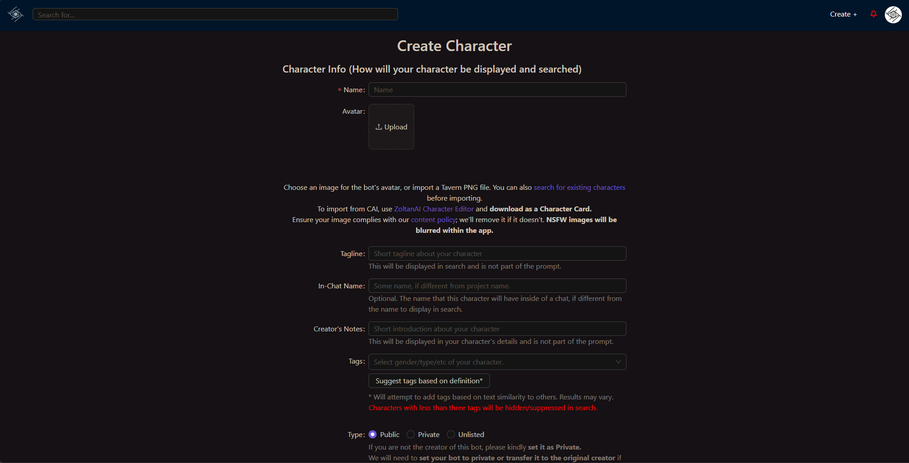
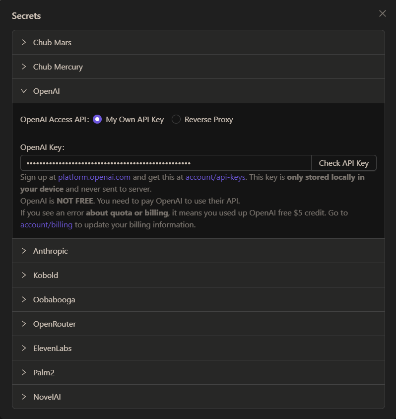

用 Chub AI 搭一条角色卡工作流：从想法到可聊只花二十分钟
以前设计一个可玩的 AI 角色要来回改七八稿，还得手动调 Prompt 里的变量顺序。把 Chub AI 嵌进日常流程后，角色从灵感闪现到能和朋友分享试用，基本稳定在二十分钟内完成。
我的日常工作流里为什么需要一个角色卡工具
我每周要做一件事：把脑子里飘的那些碎片化角色设定——可能是写小说时冒出来的配角，也可能是游戏直播里看到的 NPC 原型——整理成可以跟 AI 对话、验证性格是否立得住的可玩角色。
以前这个流程是三步：在笔记本里写设定 → 手动拼接 Prompt 模板（Personality、Scenario、开场白、Lorebook 片段各占一段，顺序不能乱，宏变量写错一个就卡）→ 贴到随便一个支持自定义 Prompt 的聊天工具里跑两回合，不满意再回到笔记本改设定、再拼一次 Prompt、再贴一遍。
卡壳的地方很明确：手动拼接 Prompt 这一步不仅慢，而且每次重拼都容易漏字段或者宏没闭合——比如 {{personality}} 写成 {{personality} 少了个右花括号，AI 就把整个宏当纯文本读了，回复直接偏到姥姥家。更烦的是，改完设定还得手动检查每个宏在模板里的注入位置对不对，Prompt 结构一变就要重新理一遍。
后来发现chub ai官网刚好能把这坨事接走。它本质上是一个把角色卡设计、Prompt 组装、聊天运行合并在一个界面里的 AI 角色扮演平台——你填 Persona、Scenario、开场白这些字段，它自动按模板把它们塞进 Prompt 宏里，而且角色卡本身就是可复用的结构化数据，下次改设定直接在字段上编辑，不用再碰 Prompt 文本。
新流程：Chub AI 嵌在我的哪一环
现在我每周处理角色卡的流程变成这样：
第一步还是笔记本——不换，因为随手记灵感还是纯文本最快。但写完设定后不再手动拼 Prompt，而是直接从官方下载拿一份，打开它的角色创建界面，把 Personality、Scenario、First Message 这些字段分别填进去。

这里的关键衔接点是：笔记本里的角色设定段落，刚好能对应到 Chub 的三个核心字段。Personality 字段要写短句列举特质（比如"外向、话多、喜欢开玩笑、偶尔流露出脆弱的一面"），不要写散文——我以前在笔记本里习惯写一大段描述，现在要主动拆成特质列表，这是唯一的格式转换，但只需要在粘贴时加一点结构，比手动拼 Prompt 省多了。
第二步在 Chub AI 里跑对话验证。角色创建完直接点 Chat，系统会自动发送你定义好的开场白。这里省掉了以前"复制 Prompt → 贴进聊天工具 → 选模型 → 点发送"这三次手动操作。Chub 的聊天页面入口有三种方式：角色库首页的紫色 Chat 按钮、角色详情页的右上角按钮、或者收藏夹里直接点。我通常从创建界面直接跳，一步到位。
第三步是收尾环节：跑两回合对话后，如果 AI 的回复偏离预期，我直接回到角色编辑界面改 Personality 或 Scenario 字段，保存后重新开一轮聊天验证。整个过程不离开 Chub 这一个页面，不用在笔记本、Prompt 编辑器、聊天工具三个窗口之间来回切。
上下游的配合也很直接：灵感收集用 Obsidian，Chub 里验证通过的角色卡我会下载成 JSON 存回笔记的角色库目录，方便下次复用或分享给朋友。
最容易断链的两个环节怎么处理
这套流程跑了快一个月，有两个地方特别容易出问题。
第一个断链点是 API 配置和空回复。Chub AI 支持多种后端——Mars 模型、OpenAI、Anthropic、本地的 Kobold 或 Ooba 实例。每次换 API 或者 API 额度耗尽的时候，AI 会出现空回复、只写角色名就卡住、或者一直转圈不返回内容。排查顺序我已经背熟了——这些要点也是从chub ai文档里反复确认的：先刷新页面排除前端临时状态，换另一个模型试试能不能正常回复，检查 Temperature 是不是太低（接近 0 会让 AI 极端保守、选择不输出），再看 System Prompt 里有没有格式错误的宏。这些检查都在 Chub 的配置面板里完成，不用跳去外部工具。

第二个断链点是 反病毒软件拦截。Avast 和 AVG 用户报告最多——Chub AI 的域名被反病毒引擎做了误判标记，访问时会出现 "Connect_reset" 或连接超时。最直接的绕过方案是把 Chub 域名加入反病毒白名单，或者临时关闭网页防护模块测试确认是不是反病毒导致。我自己用的是 Windows Defender 没踩过这个坑，但身边用 Avast 的朋友遇到好几次，都是白名单解决的。
效果和边界
省了多少事？量化一下：以前从灵感闪现到验证完一个角色，快的话 40 分钟，慢的话一个半小时——大部分时间花在手动拼 Prompt 和排查宏错误上。现在稳定在 20 分钟以内，而且验证通过的角色卡是结构化数据，分享和复用都不用重新处理。
这套流程什么时候不划算？两种情况。一是角色设定特别复杂、需要挂载多段 Lorebook 的场景——Chub 的 Lorebook 编辑器功能够用，但如果你的 Lorebook 条目多到 Token Budget 需要精细计算，在专门的 Lorebook 管理工具里编辑再导入可能更高效。二是你完全不需要聊天验证、只是想写设定文档——直接用 Obsidian 写就行，Chub 的角色创建界面反而多了一层操作。
但对我这种需要"写完设定马上跟 AI 聊两回合看性格立不立得住"的人来说，Chub AI 把角色设计到验证这条链上所有手动拼接 Prompt 的工作都吃掉了。这就是它在我工作流里的位置——不是主角，是那个帮我省掉三次复制粘贴、两次窗口切换、一次宏闭合排查的环节。